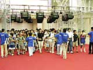

| #1 スペースワールド2000、最終日が開場！ |
| NINTENDOスペースワールドもいよいよ今日が最終日です。会場前の午前8時30分に入り口を見てみると、１、２日目以上の長蛇の列が……。来場数を聞いてみると、この時点ですでに前日より200名多いお客さんが並んでいるとのことです。 列の中には、１、２日目で見たことのあるお客さんもチラホラ。先頭のほうだというのに、小さいお子さんの姿を見ることもできます。おとなしくちゃんと並んでて、偉いね〜。一緒に来ているお父さんもお疲れ様です。やはり、親子連れのお客さんが一番多いようですね。 |
| 相変わらずの大盛況により、本日も予定より15分早い8時45分に開場。また誘導スタッフのみなさんが、テキパキとお客さんを誘導します。階段で走ると危険なので、そこに最も気を配っていますと誘導スタッフの方は話してくれました。でも、お客さんはみんなちゃんと言うことを守って入場してくれるので、大きな心配はないみたい。 |
|  スタッフの誘導が終わると、本日もみんな思い思いのコーナーへと散らばっていきます。今年最後のNINTENDOスペースワールド、悔いのないよう目いっぱい堪能していってください。 |
| 次のレポートへ |